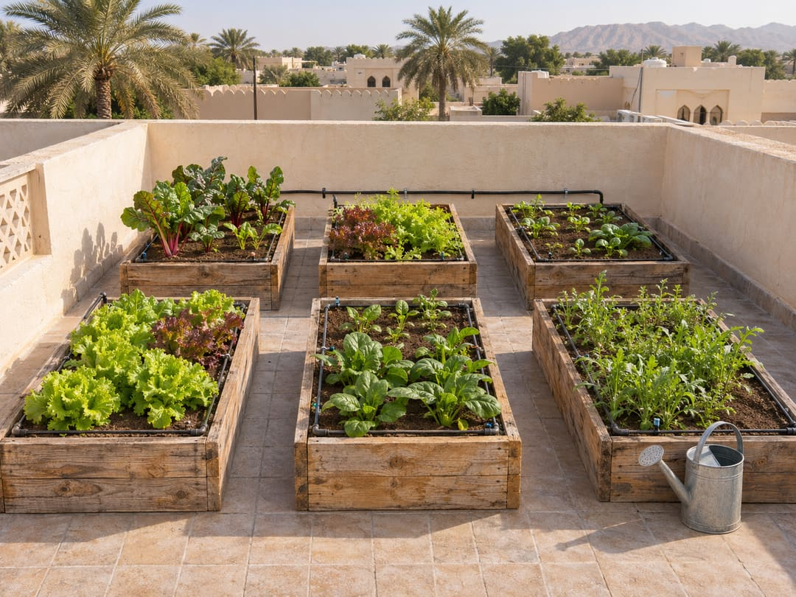

نبدأ معك لا نشرح لك
الشرح وحده لا يُنبت شيئاً. فالمتطوّع يأتي بيتك ويركّب معك الحوض الأوّل بيديه — لأنّ أصعب خطوةٍ هي الأولى.
بدأنا بسطحٍ واحد، وصرنا مئةً وثمانين.
في ربيع 2024، زرع ثلاثةُ جيرانٍ في حيّ المويجعي أحواضَ خضارٍ على أسطح بيوتهم. لم تكن تجربةً منظَّمة — كانوا يتبادلون النصائح عبر مجموعةٍ في الواتساب، ويتقاسمون الشتلات.
وحين صارت المجموعة أربعين شخصاً، ظهر نمطٌ واضح: كلُّ قادمٍ جديد يسأل الأسئلة الثلاثة نفسها — من أين أشتري التربة؟ ومتى أزرع؟ ولماذا ماتت نبتتي؟
فكانت الورشة الأولى محاولةً للإجابة مرّةً واحدة بدل أربعين. حضرها أحدَ عشرَ شخصاً في فناء بيت. واليوم نُقيم ورشةً كلّ شهر في حديقة الجاهلي العامّة.

الشرح وحده لا يُنبت شيئاً. فالمتطوّع يأتي بيتك ويركّب معك الحوض الأوّل بيديه — لأنّ أصعب خطوةٍ هي الأولى.
كثيرٌ من النصائح على الإنترنت مكتوبةٌ لمناخٍ آخر. ونحن نجرّب في المدينة نفسها، ونقول ما نجح وما فشل عندنا.
الورش مجّانية، وثمن الشتلة يغطّي كلفتها وحدها. والفريق كلُّه متطوّع — لا موظّف واحد.
سبعةٌ وعشرون متطوّعاً، وهؤلاء من ينسّقون العمل.
مهندسةٌ زراعية، وصاحبةُ السطح الأوّل الذي بدأت منه الفكرة.
يُكثر الشتلات ويختار ما يناسب كلّ موسمٍ في مناخ العين.
تنظّم زيارات التركيب، وتوزّع المتطوّعين على أحياء المدينة.
منذ الورشة الأولى في مايو 2024.